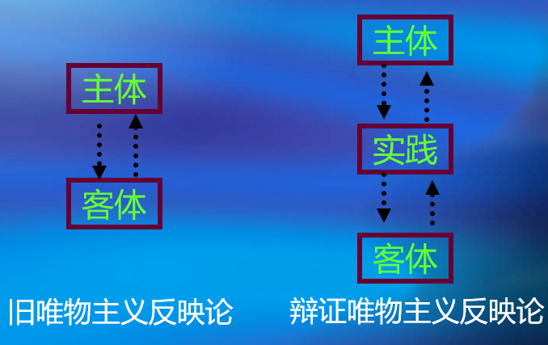
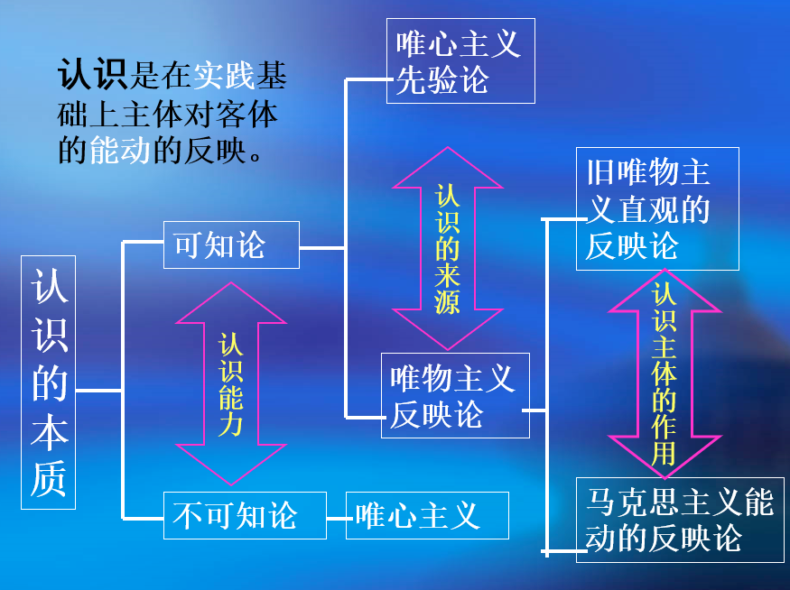
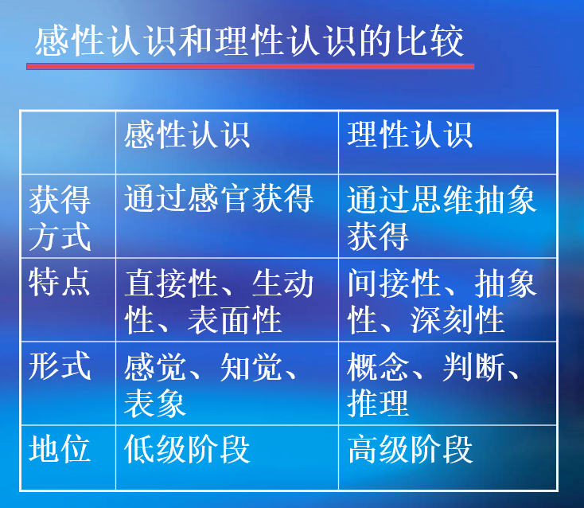
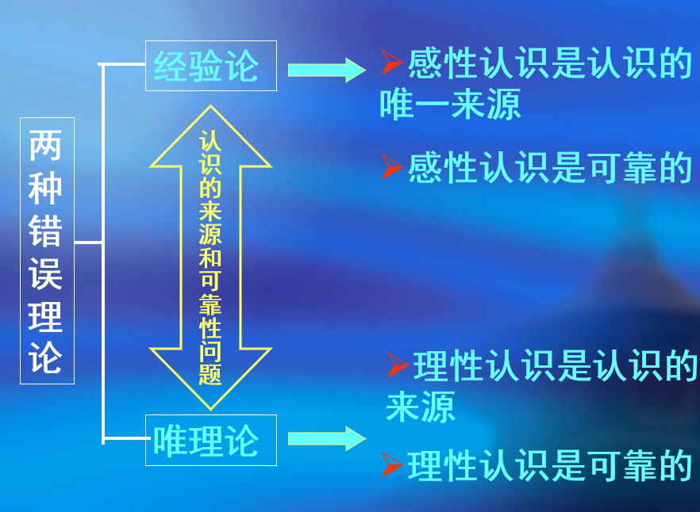
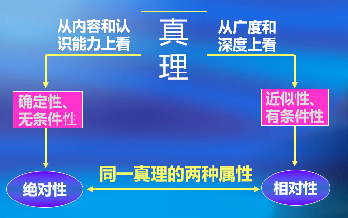

第一节 认识与实践
一、认识的本质
人类能不能（完全）认识世界
可知论与不可知论
不可知论的概念与实质
所谓不可知论，就是对哲学基本问题的第二方面做了否定回答的哲学学说，认为世界是不可知的
驳斥不可知论最有力的武器是实践
人的认识从哪里来
反映论与先验论
- 反映论：是指确认认识的本质是人脑对客观世界的反映的认识论原则，坚持从“物到感觉和思想”的认识路线。是唯物主义认识论
- 先验论认为：人的认识和认识能力是先于感觉经验、先于实践的东西，是先天就有的。它坚持从“思想和感觉到物”的认识路线。是唯心主义认识论
思维的逻辑形式就是指逻辑范畴（因果性、必然性、现象与本质等）、逻辑推理的规则和方法（三段论等）
思维的逻辑形式归根到底来自于实践活动。 由于人的活动，就建立起因果观念即一个运动是另一个运动的原因这样一种观念。 “必然性的证明寓于人类活动中，寓于实验中，寓于劳动中” 。——恩格斯
人的认识过程与镜子反射一样吗
能动的反映论与直观被动的反映论
马克思主义认识论坚持能动革命的反映论，反对直观被动的反映论

形而上学唯物主义认识论的缺陷
- 离开实践考察认识问题，因而不了解实践对认识的决定作用
- 不了解认识的辩证性质，不能把认识看做是一个不断发展的过程
能动反映论的特点
- 一方面，认识的反映特性是人类认识的基本规定性。即人的认识必然要以客观事物为原型和摹本，在思维中再现或摹写客观事物的状态、属性和本质
- 另一方面，认识的能动反映具有创造性。反映不是照镜子式的原物映现，而是一种在思维中的能动的、创造性的活动。其中，不仅有对对象信息的接受，而且还有对对象信息的选择、重组、整合、建构
建构：
建构一般是指主体在思维中对客体信息的重构过程。它是认识过程中主体能动性和创造性的最突出表现
认识的本质
认识是在实践基础上主体对客体的能动的反映

二、实践是认识的基础
实践是认识的基础
- 确认实践是认识的基础，是马克思主义哲学实践性的重要表现，同时也是马克思主义哲学实践论思维方式的体现
- “实践是认识的基础”，是马克思主义哲学“认识的本质”论的进一步深化和推进
1、实践是认识的来源
实践选择了认识对象，客观世界中哪些事物能够成为人们的认识对象，是由实践的需要和水平决定的
2、实践是认识发展的动力
变化发展着的实践不断给人们提出新的认识课题，推动人们去进行新的探索和研究
实践也不断提供大量有关的经验材料以及新的认识工具，使人们能够不断解决认识课题，使认识不 断向前发展
实践还改造了人的主观世界，锻炼和提高了人的认识能力
3、实践是认识的目的
认识（理论）对实践的指导作用
- 理论增强实践活动的自觉性、坚定性和预见性
- 正确的理论把实践引向成功；错误的理论则导致实践的失败
4、实践是检验认识真理性的唯一标准
三 、认识运动的基本规律
（一）从实践到认识
认识的过程首先是从实践到认识的过程。这个过程主要表现为在实践基础上认识活动由感性认识能动地飞跃到理性认识，也就是从生动的直观到抽象的思维，这是认识运动的第一次飞跃
1.感性认识
-
感性认识的含义
感性认识是人们在实践基础上，由感觉器官直接感受到的对事物的现象、外部联系和各个方面的认识。它是认识的初级阶级
-
感性认识的形式
感性认识有三种形式：感觉、知觉和表象
- 感觉是人的感觉器官对客观事物的个别属性、个别方面的直接反映。它是感性认识从而也是整个认识过程的起始环节
- 知觉是人的感觉器官对客观事物外部特征的整体反映
- 表象是感性认识的高级形式，是人脑对过去的感觉和知觉的回忆，是曾经作用于感觉器官的客观对象的形象再现
2.理性认识
-
理性认识的含义
理性认识是人们借助抽象思维，得到的对事物本质、全体、内部联系和规律的认识。它是认识的高级阶段
-
理性认识的形式
理性认识有概念、判断和推理三种形式
- 概念是反映事物本质属性的思维形式
- 判断是展开了的概念，是对事物之间的联系和关系的反映，对事物有所肯定或有所否定的思维形式。它是概念之间的关系
- 推理是根据事物之间的联系，由已知判断推出新判断的思维形式

3.感性认识和理性认识的辩证关系
- （1）感性认识有待于发展和深化为理性认识
- 感性认识有缺点和局限性
- 认识的任务就在于把握事物的本质和规律。因此，感性认识必须要上升到理性认识
- （2）理性认识依赖于感性认识
- 从认识发生、发展的顺序看，在实践中先产生感性认识，然后产生理性认识
- 从现象与本质的关系来看，本质存在于现象之中，因此，必须首先认识现象才能认识本质。所以，感性认识是理性认识的基础，是达到理性认识的必经阶段
- （3）感性认识和理性认识相互渗透，相互包含
割裂二者关系的错误理论和倾向

4.实现认识过程第一次飞跃的条件
- 要勇于实践，深入调查，获取丰富可靠的感性材料
- 经过理性思考的作用，将丰富的感性材料加以去粗取精、去伪存真、由此及彼、由表及里的改造
（二）从认识到实践
认识过程的第二次飞跃：
从认识到实践，是认识过程的第二阶段，即由精神到物质的阶段，由思想到存在的阶段。
1.认识过程第二次飞跃的必要性和重要性
理性认识必须回到实践
必要性表现：由认识目的是为了改造世界
重要性表现：认识的真理性只有到实践中，才能得到检验和发展
2.理论向实践飞跃，需要经过一定的中介环节
- 确定实践目的
- 形成实践理念，即实践的理想蓝图
- 制定实践方案，即把实践理念具体化的计划、措施和手段
- 进行中间实验
- 对人民群众进行组织和宣传，让理论为群众所掌握，并转化为改造世界的物质力量
（三）实践与认识的辩证运动及其规律
造成认识过程反复性和无限性的原因：
- 事物是复杂多变的，即使对个别的、具体的事物的认识也要经历多次反复
- 主体受主、客观条件的限制
第二节 真理与价值
一、真理的客观性、绝对性和相对性
（一）真理的客观性
1.真理的含义
真理是标志主观和客观相符合的哲学范畴，是人们对客观事物及其规律的正确反映
2、真理的客观性（客观真理）
真理的内容是对客观事物及其规律的正确反映
客观性是真理的本质属性
真理是一元的
（二）真理的绝对性与相对性（绝对真理与相对真理）
1．真理的绝对性和相对性的含义

-
绝对真理：指真理主客观统一的确定性和发展的无限性
- 任何真理都标志着主观与客观之间的符合，都包含着不依赖于人和人的意识的客观内容
- 人类认识物质世界的能力是无限的、绝对的
-
相对真理：指人们在一定条件下对客观事物及其本质和发展规律的正确认识总是有限度的、不完善的
-
任何真理都是对客观世界的某一阶段、某一部分的正确认识（广度上的有限性）
-
是任何真理都只达到了对客观对象一定方面、一定层次和一定程度的正确认识（深度上的有限性）
2．真理的绝对性和相对性的辩证关系
-
二者相互依存
人们对于客观事物及其本质和规律的每一个正确认识都是在一定范围内、一定程度上、一定条件下的认识，因而是相对的和有局限的
但是在这一定范围内、一定程度上、一定条件下，它是对客观对象的正确反映，因而是无条件的、绝对的
-
二者相互包含
一是真理的绝对性寓于相对性之中
二是真理的相对性包含并表现着真理的绝对性
绝对真理和相对真理的相互转化：
真理的发展是不断由相对真理走向绝对真理的永无止境的转化过程,任何真理性的认识都是由真理的相对性向绝对性转化过程中的一个环节，这是真理发展的规律
3、真理和谬误的辩证关系
- 真理和谬误的对立
真理是人们对客观事物及其规律的正确反映，而谬误则是人们对客观事物及其规律的错误反映。在确定的对象和范围内，真理与谬误的对立是绝对的
-
真理和谬误的对立又是相对的
真理与谬误相互转化
三、真理的检验标准
反对主观标准
已经获得的真理性理论是检验新认识的标准
已经获得的真理性理论是检验新认识标准
真理的检验标准问题
真理的标准和检验真理的标准的区别
“实践是检验真理的唯一标准”具有两层含义
- 实践能检验认识的真理性
- 只有实践才是检验真理的标准
1．为什么说实践是检验真理的唯一标准
这由真理的本性和实践的特点所决定的
从真理的本性看，真理是人们对客观事物及其发展规律的正确反映，它的本性在于主观和客观的相符合。因此，只有那种能够把主观认识和客观事物联系和沟通起来，从而进行比较和对照的东西才能充当检验真理的标准
实践是人们改造世界的客观的物质性的活动，具有直接现实性的特点，它是能够把主观和客观相联系起来的桥梁
因此，只有实践才是检验真理的唯一标准
2．实践标准与逻辑证明
为什么说实践是检验真理的唯一标准
逻辑证明只能回答前提与结论的关系是不是符合逻辑的问题，而不能回答结论是不是符合客观实际的问题
逻辑证明证明的结论还要拿到实践中去得到进一步的检验
3．实践标准的确定性和不确定性
实践是历史的、具体的，任何时候的实践都受主观和客观条件的限制，不能完全证实或驳倒当时的一切认识
四、真理与价值的辩证统一
（一）价值及其特性
1.价值
哲学上的“价值”是指在实践基础上形成的主体和客体之间的意义关系，是客体对个人、群体乃至整个社会的生活和活动所具有的积极意义
2.价值特性
- 客观性
- 主体的存在和需要是客观的
- 客体的存在、属性及作用是客观的
- 满足主体需要的过程和结果具有客观性
- 主体性
价值关系的形成依赖于主体的存在和创造
- 多维性
- 社会历史性
（二）价值评价及其特点
价值评价是主体对客体的价值以及价值大小所作的评判或判断，也称价值判断
特点：
- 评价是以主客体的价值关系为认识对象的。
- 评价结果与评价主体直接相关。
- 评价结果的正确与否依赖于对客体状况和主体需要的认识。
一个合理的价值评价、价值认识，必须符合两个基本要求：
- 对客体状况的正确认识
- 对主体需要的正确认识
（三）价值观与核心价值观
价值观是关于价值本质的认识，以及对人和事物的评价标准、评价原则和评价方法的观点的体系。
价值观对人的行为起着规范和导向作用。
价值观不同的人们，行为的取向也会不同，甚至可能截然相反。即使从同一个真理性的认识出发，也可以引出不同的甚至相反的行为取向。（德才兼备的重要性）
（四）真理和价值在实践中的辩证统一
人们的实践活动总是受着真理尺度和价值尺度的制约
真理和价值在实践中的辩证统一关系：
- 一方面，价值尺度必须以真理为前提
- 另一方面，人类自身需要的内在尺度，推动着人们不断发现新的真理
真理尺度与价值尺度的统一是具体的和历史的。
坚持真理尺度和价值尺度的辩证统一，要求我们在实践中必须坚持和弘扬科学精神和人文精神。